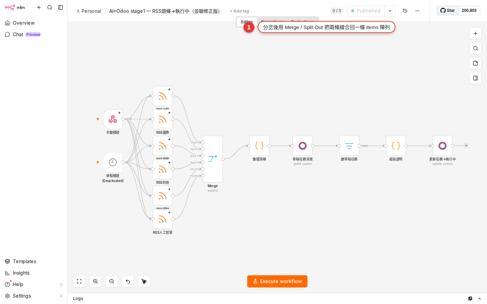

Merge / Loop Over Items / Split Out / Aggregate: working with many items
The last chapter, IF / Switch, was about splitting — one path becoming two. This chapter goes the other way: joining two paths into one, turning a single run over 500 items into rounds of 5, and breaking the big array an API hands back into separate items. These nodes are the plumbers of n8n, and almost every real workflow needs them. A note on names: this chapter uses the current official names. The old Split In Batches is now Loop Over Items (the editor shows the node as "Loop Over Items (Split in Batches)"), and the old Item Lists has been broken into the separate nodes Split Out, Aggregate, Sort, Limit, Remove Duplicates and Summarize — search for the new names.
Why these three nodes matter
Once you have built a few workflows you will run into these situations:
- You split with IF and cannot work out how to join the paths back. The IF node splits the data down a true / false pair of paths. Each side finishes its own work and you want one summary notification at the end — but the two paths keep running separately, and nothing you try brings them back together.
- The Airtable / Notion API allows 5 calls a second and you feed it 500 items at once. Push them all in and the node is knocked back with
429 Too Many Requestshalfway through: the early ones went in, the rest never ran, and patching that up is painful. - The API returns one item with a
resultsarray inside, and the nodes downstream cannot reach it. You saw this trap in Chapter 9 —{ total: 5, items: [...] }counts as 1 item, so the Slack node downstream sends once instead of 5 times. - Two APIs each return half the data and you need a join to get the whole picture. One side has the customer details, the other the order amounts, both on the same
customer_id, and you want them stitched into one report.
These four problems are solved by a handful of nodes: Merge (joining paths), Loop Over Items (formerly Split In Batches, for batching), Split Out (an array becomes several items) and Aggregate (several items become one array) — the last two used to be Item Lists and are separate nodes now. Learn these and your workflows move on from "toys" to "things the business can run on".
What each node does, in one table
Get each node's place straight first, and you will know which one to reach for as soon as a situation shows up:
| Node | What it solves | Input | Output | Classic use |
|---|---|---|---|---|
| Merge | Joins two branches into one, or joins them on a key. | Two (Input 1 / Input 2) | One items array | Rejoining after an IF split to carry on, joining data from two APIs. |
| Loop Over Items (formerly Split In Batches) |
Turns one run of N items into several rounds of M. | One (a lot of items) | Two: loop (this round's items) / done (everything finished) |
API rate limits, running out of memory, wanting a progress message per batch. |
| Split Out (formerly Item Lists · Split Out Items) |
Expands an array field inside an item into several items. | One | Many (the array flattened) | An API returning { items: [...] }, a Gmail attachment array. |
| Aggregate (formerly Item Lists · Aggregate Items) |
Collapses several items into an array inside a single item. | Many | One | Report roll-ups, sending one daily summary instead of many. |
| Sort / Limit / Remove Duplicates / Summarize | Sort / take the first N / deduplicate / summarize. | Many | Many or one | The other operations from the old Item Lists, each its own node now. |
JOIN, Merge Append is UNION ALL, Split Out is UNNEST, Aggregate is GROUP BY collected into an array, and Summarize is GROUP BY with aggregate functions. Only the names change; the mental model is the same.The Merge node: four modes, and three more choices under Combine
The Merge node always needs two inputs (you see two connector dots when you draw a connection to it). The Mode dropdown has four options — this is the structure n8n moved to after 2024, and it is not the "three modes" older tutorials describe:
| Mode | What it does | Notes |
|---|---|---|
| Append | Keep data from all inputs: stacks the items from both sides one after the other. | Input 1 = 3 items, Input 2 = 2 items, output = 5 items. Like pasting rows under rows in Excel. |
| Combine | Combine data from two inputs: joins the fields from both sides side by side, then you pick one of three Combine By options (see the next table). | The most-used merge mode. It replaces the old Combine by Position / by Key / Multiplex that used to be listed directly. |
| SQL Query | Write SQL (SELECT ... FROM input1 JOIN input2 ...) to define the merge rule yourself. |
For complex JOINs and complex WHEREs — anything the UI cannot express goes here. |
| Choose Branch | Keeps only one side: "of the two branches, carry this one's data on downstream". | Not a merge, a choice between two. It replaces the old trick of rigging this up with two IF nodes. |
Once you pick Combine, there are three strategies under Combine By:
| Combine By | What it does | Input 1 | Input 2 | Output |
|---|---|---|---|---|
| Matching Fields | Compare items by field values: pairs items on a key value, the same as a SQL JOIN. | Customer data (on id) |
Order data (on customer_id) |
Output Type decides whether unmatched items are kept |
| Position | Combine items based on their order: aligns by position in the array and joins the fields. | [{a:1},{a:2},{a:3}] |
[{b:x},{b:y},{b:z}] |
[{a:1,b:x},{a:2,b:y},{a:3,b:z}] |
| All Possible Combinations | Output all possible item combinations: the Cartesian product (cross join / multiplex). | 3 items | 2 items | 3 × 2 = 6 items |
With Matching Fields selected, Output Type decides the kind of join (all five are there):
- Keep Matches — only items matched on both sides are output (inner join).
- Keep Non-Matches — only unmatched items are output (for finding the difference, as in "which customers have never ordered").
- Keep Everything — everything is kept, and unmatched fields come out as
null(full outer join). - Enrich Input 1 — Input 1 leads, and the fields from Input 2 that match are pasted on (left join).
- Enrich Input 2 — Input 2 leads, and the fields from Input 1 that match are pasted on (right join).
Loop Over Items (formerly Split In Batches): batch the work to stay under rate limits
The situation: the Airtable API allows at most 5 requests a second, and your Google Sheet has 500 customer rows to write into Airtable. Wire it straight through and after the 5th item you start collecting 429s, with the remaining 495 all failing. This is where Loop Over Items comes in.
Split In Batches; since 2024 the editor shows it as Loop Over Items (Split in Batches) — searching Loop, Split or batches all find it, and it works exactly the same. The splitInBatches type in older workflow JSON stays compatible and needs no change.Its behavior is a little unusual and confusing the first time you meet it: this node forms the loop itself.
| Setting / field | What it does | Common values |
|---|---|---|
| Batch Size | How many items each round sends to the loop output. | 5 for Airtable, 10-50 for a typical API. |
| Options → Reset | Whether to reset the counter when new items arrive. | Usually left off for a one-shot workflow; turn it on when the workflow is called continuously. |
Output: loop | The items in this batch (wire the processing nodes downstream of it). | Feeds Airtable / HTTP Request. |
Output: done | Taken only after everything has run, and only once. | Feeds an "all finished" notification or roll-up. |
On the canvas it looks like this (the nodes on the loop side have to draw a connection back to the Loop Over Items node, which is what makes the loop):
Google Sheets (500 items)
↓
Loop Over Items (Batch Size = 5)
├─ loop → Airtable Create → Wait 1 second ──┐
│ │
│←─────── back to the Loop Over Items node ──┘
│
└─ done → Slack "500 records processed"Loop Over Items does not produce a "progress bar" message itself, but every round of the loop passes through the same nodes — to report progress along the way, add a Slack node on the loop branch that sends "batch N done, M batches left".
Split Out / Aggregate: flatten an array, or collect items back into one
Split Out: an array inside one item → several items
Classic use: the Gmail node picks up a message whose binary or json holds an attachments array with 5 attachments. The whole thing counts as 1 item, and you want to run an upload to Google Drive once per attachment.
| Setting | Value | What it means |
|---|---|---|
| Fields To Split Out | attachments (or the path to that array; comma-separated for several) | Names the field holding the array to split. |
| Include | No Other Fields / All Other Fields / Selected Other Fields | Whether each item that comes out carries the original item's other fields (the mail subject, for example). |
| Options → Destination Field Name | Leave it empty, or name a new field | Which key each split-out payload sits under. Leave it empty and it is flattened. |
| Options → Disable Dot Notation | Off by default | Turn it on when a field name itself contains a ., so it is not read as a nested path. |
After the split the output goes from 1 item to 5 items, and every node downstream runs 5 times. This is the answer to the point in Chapter 9 that "n8n items and a JSON field called items are two different things" — Split Out turns a JSON array into n8n items.
Aggregate: several items → one array inside a single item
The opposite operation. Five items have been processed and you want to collapse them into one daily summary sent as a single email. Add an Aggregate node and pick one of the two Aggregate options:
- Individual Fields — aggregates only the fields you name, with Rename Field to change the name and Merge Lists to flatten nested arrays.
- All Item Data (Into a Single List) — packs every item's whole json into one big array, with Include / Exclude lists to allow or block fields.
Sort (sorting, SQL ORDER BY), Limit (take the first N, SQL LIMIT), Remove Duplicates (deduplication, SQL DISTINCT) and Summarize (grouped statistics, SQL GROUP BY plus aggregate functions) are each their own node now too — search for whichever one you need.
Worked example: one Slack reminder per Google Sheet row
This workflow shows the case where "the items are expanded already, so you do not need Loop Over Items at all" — Google Sheets Read turns each row into an item by itself. Treat it as a warm-up.
-
Add a Manual Trigger
Create a workflow and pick Trigger manually as the first node. Pressing Execute Workflow then runs it once.
-
Add a Google Sheets node
Wire on a Google Sheets node and set Operation to Get Rows in Sheet. Connect the credentials (Chapter 2), then pick your spreadsheet and sheet. Say the spreadsheet is called "Customer list", has 10 rows, and its fields are
name,emailanddue_date. -
Execute step and confirm 10 items arrive
Press Execute step on the Google Sheets node. The top of the output panel on the right shows 10 items — check the count is right. Switch to the Table view to read each row.
-
Add a Slack node
Wire on a Slack node, set Operation to Send Message and pick a channel (
#billing-reminder, for example). Switch the Text field to Expression mode and enter:Statement reminder for {{ $json.name }}. Due {{ $json.due_date }} — please take care of it. -
Execute the whole workflow once
Press Execute Workflow at the top right. The Slack node's output panel shows 10 items — 10 messages sent, one per row. Check the channel to confirm 10 actually arrived.
-
Save it
Save at the top right. From then on, pressing Execute Workflow sends another round. To send it automatically on the 1st of each month, swap the Manual Trigger for a Schedule Trigger (Chapter 10).
Worked example: split the array an API returns and act on each entry
This is where Split Out belongs. Call a public API (https://jsonplaceholder.typicode.com/users, for example) and it returns one whole array of 10 users — what n8n receives is 1 item whose field is an array. To send a Slack notification per user, you need Split Out.
-
Manual Trigger + HTTP Request
Pick a Manual trigger. Wire on an HTTP Request node, set Method to GET and URL to
https://jsonplaceholder.typicode.com/users. Run it once with Execute step. -
Check the output: 1 item with an array inside
The top of the output panel shows 1 item (not 10). Switch to the JSON view and expand it: the whole response is an array. As it stands, any node downstream would run once — wrong, we want it to run 10 times.
-
Add a Split Out node
Wire on a Split Out node (search "split out" and it comes straight up; the "Item Lists → Split Out Items" of older tutorials is this standalone node now). Put the field holding the array in Fields To Split Out — if HTTP Request puts the whole array in
dataor at the root, use the path that matches (read the real path off the output panel when you test it). -
Execute step and confirm 10 items
Press Execute step on the Split Out node. The top of the output panel shows 10 items — one row per user. Switch to the Table view and check that
nameandemailboth have values. -
Wire on a Slack node to notify per item
Wire on a Slack node with Send Message and set Text to
Welcome {{ $json.name }} ({{ $json.email }}). Run Execute Workflow once → the Slack channel receives 10 welcome messages. -
(Advanced) Aggregate back into one summary
Add an Aggregate node after the Slack node, set Aggregate to Individual Fields and Field To Aggregate to
name(Rename it tonamesif you like). The output is back to 1 item, with a field holding an array of 10 names. Then wire on a Gmail node that sends "Processed these 10 users today: {{ $json.names.join('、') }}" — one summary email, instead of 10 alerts flooding the inbox.
Four common combinations
Knowing a single node is only the start; the real strength is in "two or three of them together". You will reach for these combinations most weeks:
| Combination | What it solves | Structure |
|---|---|---|
| IF + Merge | Each branch does its own thing, then they rejoin into one path that continues downstream. | IF → true branch (Set A) & false branch (Set B) → Merge (Append) → Slack |
| Loop Over Items + Wait | Batching plus a pause, to stay under a rate limit. | Loop Over Items → HTTP Request → Wait 1s → back to Loop Over Items |
| Split Out + processing + Aggregate | One big array from an API → do something with each entry → collapse into one summary. | HTTP Request → Split Out → processing nodes → Aggregate → Email |
| Merge Combine · Matching Fields | Two data sources joined on a key into one complete record. | HTTP A → ↓ HTTP B → Merge (Mode = Combine, Combine By = Matching Fields, id ↔ customer_id) → downstream |
Every one of these is worth trying on the practice workflow from Chapter 8 first: get it running there before you point it at real business work.

Common pitfalls
-
Merge Combine · Position loses half the data
Combine By = Position means "align by position" — with 3 items on Input 1 and 5 on Input 2, the output has only 3 (the shorter side wins) and the last 2 are simply dropped. To keep everything, switch to Combine By = Matching Fields with Output Type Keep Everything, or use Append mode to stack them and work from there.
-
Loop Over Items never stops and runs forever
Two common causes: (a) the nodes on the loop branch are not wired back to the Loop Over Items node — the loop runs one round, the rest of the data is dropped, and nothing actually errors; wire it to the done branch by mistake instead and things get strange; (b) Options → Reset is on while new items keep arriving upstream (a Webhook trigger, for example), so each arrival counts as a fresh round. Leave it off unless you are building a long-running service.
-
Split Out runs and the output is identical
Nine times out of ten Fields To Split Out is wrong: (a) the field name is misspelled (case, singular vs plural); (b) you entered a field inside the array rather than the array itself; (c) the field is not an array at all but an object. Switch to the Schema view on the upstream node, find the field whose type is
array, and paste its full path (data.results, for example) in. -
The item order changes after a Merge
Each mode has its own ordering rule: Append guarantees all of Input 1 first and all of Input 2 after; Combine · Position guarantees the same index lines up; Combine · Matching Fields orders by the order the keys appear in Input 1 — if you need a particular order, put a Sort node before or after the Merge.
-
The Merge node sits there and never runs
Merge only runs when both inputs have data. After an IF split, if no item goes down the true branch (every condition came out false), Merge waits forever. The fix: put a No Operation, do nothing node on the empty branch (it changes no data, it just carries the connection), or use the IF node's Fallback Output so something reaches both Merge inputs.
-
Loop Over Items with a Wait, but the wait is not what you expected
The seconds on a Wait node mean "this item waits N seconds here before it moves on" — with Batch Size = 5, the 5 items in one batch reach Wait at nearly the same moment and then each waits 5 seconds (not one 5-second wait for the batch). For "5 seconds between batches", keep Batch Size at 5 and Wait at 5, then test it and read the timestamps of the requests that actually went out.
FAQ
Does Merge always need two inputs, or can it take three or more?
How large can Batch Size be on Loop Over Items?
Split Out or the Code node for splitting an array — which is better?
Is an n8n workflow multi-threaded — can it process several items at once?
EXECUTIONS_MODE=queue) so several workflow executions run at the same time. Parallelism inside one execution is not the direction n8n is designed in.What if I only want to try the first 10 of the 500 items?
What decides a match in Merge Combine · Matching Fields? Is it case-sensitive?
"Alice" and "alice" do not match. Types matter — the string "123" and the number 123 do not match either. When the types disagree, line them up with a Set node first (cast to string or to number) before Merge; or in Merge's SQL Query mode, write a CAST.What happens if Loop Over Items fails halfway — does the work already done roll back?
When should I use Merge's SQL Query mode?
ON a.id = b.customer_id AND a.region = b.region), a CASE WHEN, a UNION with a WHERE filter, a subquery. n8n runs it with alasql underneath, and the two inputs are the tables input1 / input2. For a plain append, position alignment or a single-field join, stay with the ordinary modes rather than moving to SQL for its own sake.How do I use the array Aggregate produced in an expression?
name into names: downstream you can write {{ $json.names.join('、') }} (joins them into one line with an ideographic comma), {{ $json.names.length }} (how many), {{ $json.names.filter(n => n.startsWith('W')) }} (filter). The full list of these is in Chapter 14, Expressions.